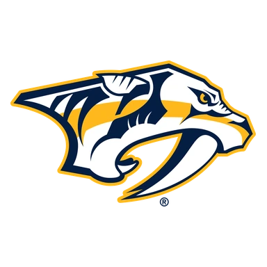
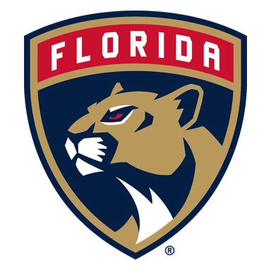
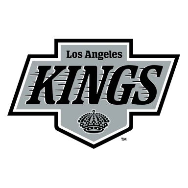
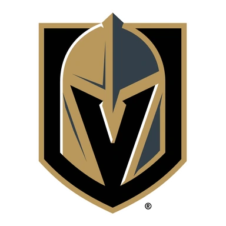

Вашингтон — Баффало превью матча 20 ноября
Расчёт модели
Расчёт появится примерно за 1,5 суток до матча
Модель считает вероятности, когда известны свежие результаты команд. До этого на странице — форма, личные встречи и таблица.
- ТурнирНХЛ
Напомнить о матчеGoogle КалендарьПрогнозы дня — в TelegramСобытие в календаре телефона, напоминание за 15 минут до начала.
Коротко о матче
По форме команды близки: в пяти последних матчах Вашингтон — 3 победы, Баффало — 2 победы. Слабое место — оборона: Вашингтон — в среднем 3,8 пропущенной шайбы за игру в этих пяти матчах, так что у соперника будут моменты.
Обе команды играют результативно: больше 5,5 шайб набиралось в 11 из 16 их последних матчей. В последний раз команды встречались 5 апреля 2026 года: Вашингтон — Баффало 6:2.
Форма: последние матчи
 Вашингтон 3 победы из 5
Вашингтон 3 победы из 5

В4:3 П1:5
П1:5 П5:6
П5:6
В4:3 В3:2
В3:2
Баффало 2 победы из 5

В3:2- П1:2
 В5:2
В5:2
П1:4 П3:8
П3:8
Личные встречи
- Вашингтон6:2Баффало
- Баффало1:2Вашингтон
- Баффало4:3БВашингтон
- Вашингтон5:8Баффало
- Баффало4:3БВашингтон
- Вашингтон4:2Баффало
Положение в таблице
| Команда | Место | И | В | П | Голы | Очки |
|---|---|---|---|---|---|---|
| 9 | 16 | 10 | 6 | 56:53 | 20 | |
| Баффало | 10 | 18 | 8 | 10 | 53:65 | 19 |
Другие матчи НХЛ в этот день
Куда дальше
Все прогнозы дня — в TelegramПрогнозы на КХЛ, НХЛ и футбол, итоги каждое утро. Бесплатно.
Открыть каналМатериалы носят информационный характер и не гарантируют результат. Реклама букмекеров на сайте не размещается. Сайт только для совершеннолетних (18+).